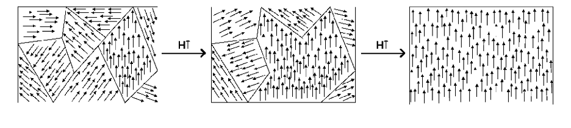

The Science Behind Placealgo
Magnetic Domains
Because we want to live in a place that energizes us, the first thing to understand is how energy is created. Energy is created when the magnetic domains in a metal point in the same DIRECTION.

Esquema de dominios magnéticos de un ferromagneto alineándose con un campo creciente. Preparada por Jose Lloret y Alicia Forment, y liberada bajo la GFDL (source : Wikipedia.com).
A wonderful book that describes magnetic domains and how they apply to modern technology is "Driving Force – The Natural Magic of Magnets" by James D. Livingston.
Now, the research leading to the Placealgo algorithm has found that we will feel more uplifted/energized in places who share specific letters in our names.
The logic here is the same as for rhymes and repeated notes in music, and that is why harmonious music feels uplifting. And our goal is to have the same uplifting feelings in the place where we live, as we have with our favourite music!
And why are rhymes uplifting? Well, the same letters all point in the same direction, they are aligned, and as we saw above, energy is created when the magnetic domains in a metal point in the same direction. And our research has come to the conclusion that this is true not only for magnetic domains in metals, but also for letters in names and places, and even for abstract concepts like sharing the same values and goals, 'pointing' in the same direction.
Research References
Two research papers have analyzed individuals' names and confirm the validity of our own research underlying the Lovalgo algorithm:
Pelham BW, Mirenberg MC, Jones JT. Why Susie sells seashells by the seashore: implicit egotism and major life decisions. J Pers Soc Psychol. 2002 Apr; 82(4):469-87. PMID: 11999918.
Read PaperBrett Pelham & Carvallo Mauricio (2015): When Tex and Tess Carpenter Build Houses in Texas: Moderators of Implicit Egotism, Self and Identity, DOI: 10.1080/15298868.2015.1070745
Read PaperMore research like this would be necessary.
And if you are interested to understand how the Placealgo science applies to romantic and other human relationships, please read Lovalgo's science page.
Lovalgo SciencePlacealgo continues its research to finetune its algorithm in upcoming versions.